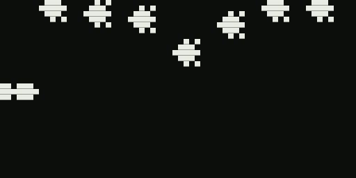
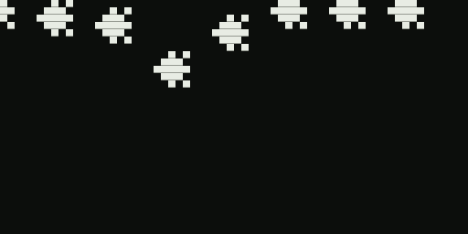

Meteor Storm (Gray)
T. Gray · DREAMER no. 15 (1981-11) p. 12 1K RAM


Steer a cruiser up and down through a scrolling meteor storm. You have three ships and the score is the number of meteors dodged. Written by an 11-year-old, and listed as '(Gray)' to tell it apart from the Meteor Storm of issue 17.
Keys
1 up, 9 down.
Files
| File | Version | Load | Run |
|---|---|---|---|
| Meteor Storm (Gray).d68 | main | 00F0-028F | C000 |
Listing as transcribed (with notes): meteor_storm_gray.txt
Source
DREAMER no. 15 on archive.org, p. 12 (PDF page 14). Author: T. Gray.
Corrections applied
None.
Open doubts
None.